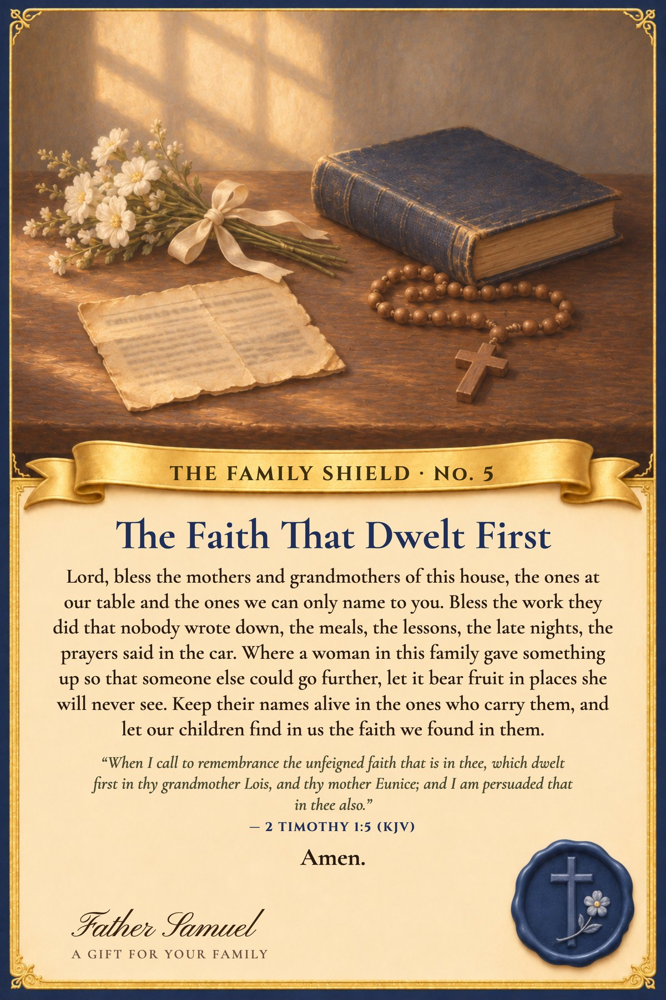
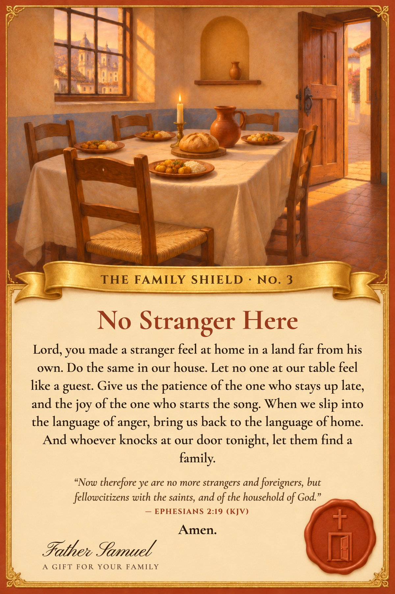
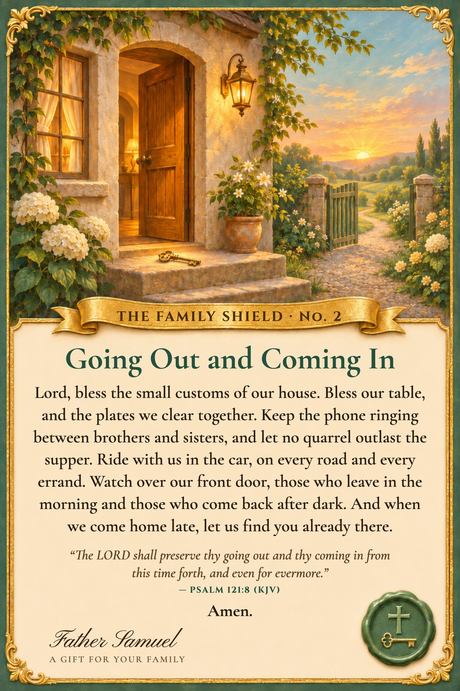
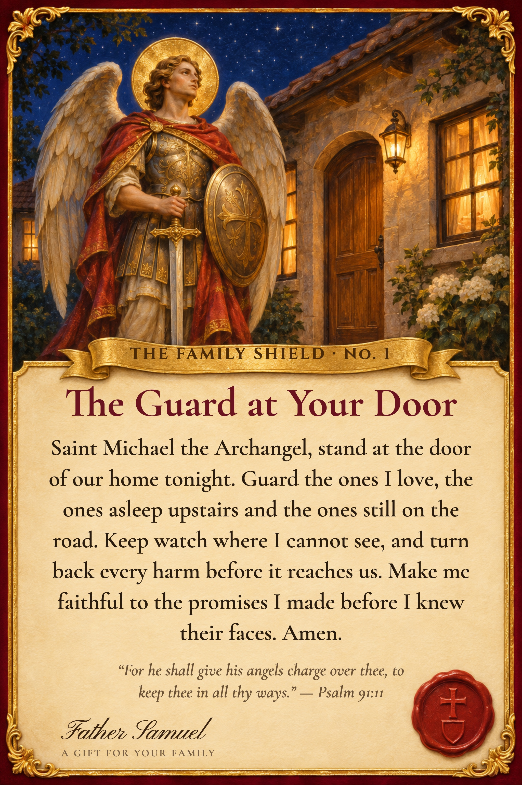

Card No. 5 · The Faith That Dwelt First
Thank you for staying to the end of the video. This card is yours. Save it on your phone, print it, and keep it where your family gathers. A new card comes with every video, so keep them together. Cards No. 4, No. 3, No. 2 and No. 1 are further down this page.


“When I call to remembrance the unfeigned faith that is in thee, which dwelt first in thy grandmother Lois, and thy mother Eunice; and I am persuaded that in thee also.” 2 Timothy 1:5
Your extra gift: seven blessings for the women who came before us
One short blessing for each day of the week. Make the Sign of the Cross and pray it slowly.
Monday · The first light in the kitchen
Bless the hands that start the day in this house, Lord, before anyone else is awake to thank them.
“She looketh well to the ways of her household, and eateth not the bread of idleness.” Proverbs 31:27
Tuesday · The kind word at home
Bless the way our mothers and grandmothers speak to us, Lord, and let their kindness become our habit.
“She openeth her mouth with wisdom; and in her tongue is the law of kindness.” Proverbs 31:26
Wednesday · The lesson remembered
Bless the prayers and lessons a mother taught in this family, Lord, even the ones we only understood years later.
“My son, hear the instruction of thy father, and forsake not the law of thy mother.” Proverbs 1:8
Thursday · The mothers without the title
Bless the aunts, godmothers and sisters in religious life who mothered us without being called mother, Lord, and comfort them as they comforted us.
“As one whom his mother comforteth, so will I comfort you; and ye shall be comforted in Jerusalem.” Isaiah 66:13
Friday · The things kept in the heart
Bless the worries a mother in this house carries quietly, Lord, and the hopes she has never said out loud.
“But Mary kept all these things, and pondered them in her heart.” Luke 2:19
Saturday · The grandmothers
Bless the grandmothers of this family, Lord, the ones we visit and the ones we visit in prayer, and let their long faithfulness be their crown.
“The hoary head is a crown of glory, if it be found in the way of righteousness.” Proverbs 16:31
Sunday · Behold thy mother
Bless this family, Lord, under the care of the Mother you gave us from the cross, and take every woman of our house into your home.
“Then saith he to the disciple, Behold thy mother! And from that hour that disciple took her unto his own home.” John 19:27
Card No. 4 · Truth, Spoken in Love
The card from our previous video. Keep it with the others.

“But speaking the truth in love, may grow up into him in all things, which is the head, even Christ.” Ephesians 4:15
Your extra gift: seven blessings for the words of your home
One short blessing for each day of the week. Make the Sign of the Cross and pray it slowly.
Monday · The first word
Bless the first words spoken in this house today, Lord, and let them be kind.
“Set a watch, O LORD, before my mouth; keep the door of my lips.” Psalm 141:3
Tuesday · The kind word
Bless the words we use with the ones we see every day, Lord, the ones we most easily forget to be gentle with.
“Pleasant words are as an honeycomb, sweet to the soul, and health to the bones.” Proverbs 16:24
Wednesday · The honest yes
Bless our yes and our no, Lord, and keep them free of excuses.
“But let your communication be, Yea, yea; Nay, nay: for whatsoever is more than these cometh of evil.” Matthew 5:37
Thursday · The listening ear
Bless the one in this house who needs to be heard today, Lord, and make us slow enough to hear them.
“Wherefore, my beloved brethren, let every man be swift to hear, slow to speak, slow to wrath.” James 1:19
Friday · The voice for others
Bless us, Lord, when we speak up for someone who can't, and give us the courage not to stay quiet.
“Open thy mouth, judge righteously, and plead the cause of the poor and needy.” Proverbs 31:9
Saturday · The word that mends
Bless the conversation that's gone quiet in this family, Lord, and give us the right word to open it again.
“A word fitly spoken is like apples of gold in pictures of silver.” Proverbs 25:11
Sunday · The Word made flesh
Bless this family, Lord, with the Word who speaks every language and came to live among us.
“And the Word was made flesh, and dwelt among us, (and we beheld his glory, the glory as of the only begotten of the Father,) full of grace and truth.” John 1:14
Card No. 3 · No Stranger Here
The card from our previous video. Keep it with the others.


“Now therefore ye are no more strangers and foreigners, but fellowcitizens with the saints, and of the household of God.” Ephesians 2:19
Your extra gift: seven blessings for welcoming
One short blessing for each day of the week. Make the Sign of the Cross and pray it slowly.
Monday · The doorbell
Bless whoever rings at our door this week, Lord, expected or not.
“Be not forgetful to entertain strangers: for thereby some have entertained angels unawares.” Hebrews 13:2
Tuesday · The extra chair
Bless the chair we pull up for someone new, Lord, and keep us glad to pull it up.
“Distributing to the necessity of saints; given to hospitality.” Romans 12:13
Wednesday · The newcomer
Bless the one who is new among us, Lord: at work, at school, in our parish, on our street.
“But the stranger that dwelleth with you shall be unto you as one born among you, and thou shalt love him as thyself; for ye were strangers in the land of Egypt: I am the LORD your God.” Leviticus 19:34
Thursday · The song
Bless the songs of this house, Lord, and teach us to sing them with whoever is listening.
“Let the word of Christ dwell in you richly in all wisdom; teaching and admonishing one another in psalms and hymns and spiritual songs, singing with grace in your hearts to the Lord.” Colossians 3:16
Friday · The language of home
Bless the words we use at home, Lord, and let the soft ones win.
“A soft answer turneth away wrath: but grievous words stir up anger.” Proverbs 15:1
Saturday · The late night
Bless those who wait up for someone tonight, Lord, and give them rest when the door finally closes.
“It is vain for you to rise up early, to sit up late, to eat the bread of sorrows: for so he giveth his beloved sleep.” Psalm 127:2
Sunday · The whole family
Bless this family, Lord, the ones born into it and the ones who found their way in.
“God setteth the solitary in families.” Psalm 68:6
Card No. 2 · Going Out and Coming In
The second card of the collection.


“The LORD shall preserve thy going out and thy coming in from this time forth, and even for evermore.” Psalm 121:8
Your extra gift: seven blessings for the house
One short blessing for each day of the week. Stand in that place, make the Sign of the Cross, and pray it slowly.
Monday · The table
Bless this table, Lord, and everyone who pulls up a chair to it.
“Thy wife shall be as a fruitful vine by the sides of thine house: thy children like olive plants round about thy table.” Psalm 128:3
Tuesday · The door
Bless this door, Lord: be the first one through it and the last one out.
“I am the door: by me if any man enter in, he shall be saved, and shall go in and out, and find pasture.” John 10:9
Wednesday · The phone
Bless the calls of this house, Lord, and remind us whom we haven't called.
“Behold, how good and how pleasant it is for brethren to dwell together in unity!” Psalm 133:1
Thursday · The car
Bless every road we take today, Lord, and bring each of us home.
“In all thy ways acknowledge him, and he shall direct thy paths.” Proverbs 3:6
Friday · The kitchen
Bless the hands that cook in this house, Lord, and the plates they fill.
“Give us this day our daily bread.” Matthew 6:11
Saturday · The bedroom
Bless our rest tonight, Lord, and let no worry stay in this room.
“I will both lay me down in peace, and sleep: for thou, LORD, only makest me dwell in safety.” Psalm 4:8
Sunday · The whole house
Bless this whole house, Lord, every room and every name in it.
“But as for me and my house, we will serve the LORD.” Joshua 24:15
Card No. 1 · The Guard at Your Door
The first card of the collection.


“For he shall give his angels charge over thee, to keep thee in all thy ways.” Psalm 91:11
Your extra gift: seven nights to bless your home
One short blessing each night, one room at a time. Stand in the room, make the Sign of the Cross, and pray it slowly. If you have holy water, you can sprinkle a little at the doorway.
Night 1 · The front door
For every coming and going
Lord, bless this door. Bless everyone who walks out of it in the morning and bring each one back safely at night. Let nothing evil cross this threshold, and let every guest find peace here.
“The LORD shall preserve thy going out and thy coming in from this time forth, and even for evermore.” Psalm 121:8
Night 2 · The kitchen and the table
For our daily bread
Lord, bless this kitchen and this table. Thank you for every meal you have given us. Keep us grateful, keep us generous with those who have less, and let no one at this table go to bed angry.
“The eyes of all wait upon thee; and thou givest them their meat in due season.” Psalm 145:15
Night 3 · The living room
For peace in the family
Lord, bless the room where we sit together. Heal the words we should not have said, soften what has grown hard between us, and teach us to listen before we answer.
“Behold, how good and how pleasant it is for brethren to dwell together in unity!” Psalm 133:1
Night 4 · The children's and grandchildren's rooms
For the ones we love most
Lord, bless the beds where our children and grandchildren sleep, here or far away. Keep their bodies safe, their minds clean, and their faith alive. Where we cannot reach them, let your angels reach them.
“I will both lay me down in peace, and sleep: for thou, LORD, only makest me dwell in safety.” Psalm 4:8
Night 5 · The bedroom
For a faithful marriage
Lord, bless this room and the promise made here. Renew the love of husband and wife, give us patience in the tired years, and if one of us is already with you, keep that love alive until we meet again.
“A threefold cord is not quickly broken.” Ecclesiastes 4:12
Night 6 · The car and the work we do
For the road and the job
Lord, bless the car in the driveway and the work that pays for this home. Protect every trip, give us honest work and rest at the end of it, and keep us from accidents and from bad company.
“He will not suffer thy foot to be moved: he that keepeth thee will not slumber.” Psalm 121:3
Night 7 · The whole house
For this home, all of it
Lord, walk through every room of this house tonight. Remember those who lived here before us and those we have lost. Make this a home where you are welcome, and keep it under your protection, now and always. Amen.
“But as for me and my house, we will serve the LORD.” Joshua 24:15